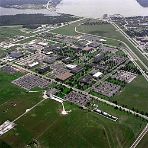

Хьюстон(англ. Houston) — четвёртый по количеству жителей город в Соединённых Штатах Америки и крупнейший город в штате Техас с населением 2 287 047 человек в 2021 году по оценке Бюро переписи населения США. Хьюстон является административным центром округа Харрис, а также главным экономическим центром агломерации Большого Хьюстона, занимающего пятое место среди агломераций по населению с общей численностью 7 340 118 человек по оценке за 2022 год. Город располагается в 50 километрах от Мексиканского залива на прибрежной равнине
Хьюстон был основан 30 августа 1836 года и включён в состав республики Техас 5 июня 1837 года, получив своё имя в честь Сэмюэла Хьюстона — главнокомандующего армией Техаса во время Техасской революции и президента Республики Техас. Быстрое развитие порта и железных дорог в XIX веке, а также начало добычи нефти и последовавшее развитие нефтяной промышленности в XX веке привели к быстрому росту населения. В 1960-е годы количество жителей превысило один миллион человек, а в 2000-е — два миллиона.
Город является ведущим мировым центром энергетической промышленности, а экономика города также представлена предприятиями в области аэронавтики, транспорта и здравоохранения. Важнейшими объектами для экономики и инфраструктуры города являются космический центр имени Линдона Джонсона, крупнейший американский по международным грузоперевозкам порт, хьюстонский судоходный канал, крупнейший в мире Техасский медицинский центр
Город назван в честь Сэмюэла Хьюстона — главнокомандующего армией Техаса во время Техасской революции (1835—1836) и президента Республики Техас (1836—1838, 1841—1844).
Сэмюэль Хьюстон
После окончания войны за независимость Техаса, в августе 1836 года предприниматели братья Август и Джон Аллены купили 26,9 км² земли вдоль реки Буффало-Байю, планируя основать на ней населённый пункт. Они хотели, чтобы будущий город стал столицей Техаса и крупным торговым центром.
Датой основания города принято считать 30 августа 1836 года, когда братья Аллены разместили объявление о появлении города. Город назвали в честь генерала Сэма Хьюстона, возглавлявшего армию техасцев в битве при Сан-Хасинто во время войны против Мексики, позже избранного президентом Техаса. На январь 1837 года в посёлке проживало всего 12 человек, однако через четыре месяца население возросло до 1500 человек. 5 июня 1837 года город был включён в округ Гаррисберг (ныне Харрис) и стал временной столицей Республики Техас, которой оставался до 1839 года. Первым мэром Хьюстона стал Джеймс Холман.
XIX век
В 1840 году жители Хьюстона создали торговую палату, деятельность которой была направлена на развитие бизнеса по морским перевозкам и недавно построенного порта на Буффало-Байю, в течение первых четырёх лет палата стремительно развивалась. Значимость торговой палаты в экономике росла, в 1853 году Законодательное собрание Техаса выделило денежные средства на улучшение каналов Буффало-Байю. В 1846 году город вошёл в состав США вместе с Республикой Техас.
К 1860 году были проложены железные дороги, связавшие Хьюстон, Галвестон и Бомонт. В этом же году Хьюстон стал железнодорожным узлом для экспорта хлопка. Во время гражданской войны город служил штабом генерала Джона Магрудера, использовавшего его в качестве организационного пункта для сражения у Галвестона. В 1860-х годах продолжал развиваться важный для экономики города объект — канал на Буффало-Байю. С середины XIX века началась активная торговля между Хьюстоном и близлежащими городами; к 1890 году город стал железнодорожным центром Техаса.
К концу века в городе уже были электрическое освещение, улицы из блоков и булыжников. Городской общественный транспорт представляла конка
XX век
Мэйн-Стрит в центре, 1908 год
В 1900 году на Хьюстон обрушился Галвестонский ураган, продолжавшийся с 27 августа по 12 сентября. В пересчете на сегодняшний курс ущерб составил бы $526 млн, погибло 8 тысяч человек. В следующем году было найдено большое месторождение нефти вблизи города Бомонт, что послужило началом развития нефтяной промышленности в Техасе. В 1902 году президент США Теодор Рузвельт утвердил проект стоимостью в $1 млн на реконструкцию хьюстонского судоходного канала. К 1910 году численность населения города достигла 78 800 человек, почти в два раза превысив количество жителей проживавших в Хьюстоне в 1900 году. В 1914 году президент США Вудро Вильсон принял участие в открытии нового глубоководного порта Хьюстона, а через год был открыт хьюстонский судоходный канал.
К 1930 году Хьюстон стал самым большим городом Техаса, обогнав по численности населения такие города как Даллас, Форт-Уэрт и Остин.
Вторая мировая война стала мощным стимулом для экономического развития города. Из-за резко возросших потребностей США в нефтепродуктах и синтетическом каучуке вдоль судоходного городского канала было возведено несколько нефтехимических заводов и производственных предприятий. В те годы Хьюстон стал крупным центром по производству нефтехимических изделий, однако в тот же период уровень тоннажа судов, находящихся в порту, снизился. Аэропорт Эллингтон-Филд, построенный ещё во время Первой мировой войны и реконструированный в 1940—1941 годах, служил учебным центром по подготовке лётного состава ВВС.
В 1945 году было начато формирование Техасского медицинского центра. В конце 1940-х несколько пригородов были включены в городскую черту, в результате чего площадь Хьюстона увеличилась более чем в два раза. В 1950-е годы управления многих крупных (в основном нефтяных) компаний США переместились в Хьюстон, что благоприятно отразилось на экономике города, одним из поводов для переезда послужило массовое оснащение всех офисов кондиционерами.
Физико-географическая характеристика
Географическое положение и климат
Хьюстон со спутника в 2020 году
Хьюстон расположен в 50 километрах от Мексиканского залива на прибрежной равнине. Значительная часть города была построена на лесных угодьях, болотах и прериях, они до сих пор сохранились в близлежащих районах около Хьюстона. Город расположен на территории, для которой обычны частые ливни и дожди, поэтому для Хьюстона наводнения — постоянная проблема. Высота города над уровнем моря в среднем 15 метров, самая высшая точка — северо-запад Хьюстона (38 метров). Площадь города составляет 1 739,62 км², из которых 1 658,72 км² занято сушей, а 80,9 км² — водная поверхность.
Город находится в зоне субтропического муссонного климата по классификации Кёппена (Cfa). Преобладающие юго-восточные ветры с Мексиканского залива дуют на протяжении всего года. Большая влажность в городе обусловлена близким присутствием Мексиканского залива. Влажность воздуха достигает утром 90 % и к полудню снижается до 70 %. В среднем 90 дней в году — солнечные, большая часть которых в октябре и ноябре. 160 дней в году — облачные, большая часть — с декабря по май.
Весной и летом в городе жарко и влажно: средняя температура весной 21 °C, а летом — 28,8 °C. Из-за высокой температуры почти во всех транспортных средствах и зданиях установлены кондиционеры. Абсолютный максимум температуры был зарегистрирован в 2000 и 2011 годах, когда она составила 42,8 °C. На Хьюстон часто обрушиваются ураганы, самые крупные из которых за последние десятилетия — «Эллисон» и «Айк». Осень — достаточно тёплое время года, особенно сентябрь. Температура в этом месяце выше, чем в мае. Средняя температура осенью составляет 21,8 °C, а среднее количество осадков — самое высокое в году (359,7 мм). Зима тёплая. Самая низкая температура была зарегистрирована в 1930 году — −15 °C. Средняя температура зимой составляет 12,6 °C, а максимальная была зарегистрирована в 1986 году — 32,8 °C. 18 дней в году температура опускается ниже 0 °C. Обычно зимой осадки выпадают в виде дождя, но редко могут быть и в виде снега. Начиная с 1895 года, снег падал 35 раз, причём 21 раз устанавливался временный снежный покров.
Дни с ясной и дождливой погодой в месяц (суммарно по часам)
Месяц
Янв
Фев
Мар
Апр
Май
Июн
Июл
Авг
Сен
Окт
Ноя
Дек
Год
Солнечное сияние, день
10
10
9
8
8
8
10
9
7
7
8
9
106
Дождь, день
14
12
12
10
10
14
13
12
10
9
10
12
136
Рельеф, внутренние воды
Для почв Хьюстона характерно наличие осадочных горных пород и песка. На поверхности часты эрозии, на территории города находится около 300 разломов, их общая длина примерно 500 км. Один из них — Long Point–Eureka Heights fault system. Также есть уникальные отложения из смеси песков и глин, благодаря им, через определённое время, из разлагающихся органических веществ образуются нефть и природный газ. На окраинах Хьюстона встречается чёрная плодородная почва, на которой растят рис, сою, зерновые культуры, овощи и разводят крупный рогатый скот, лошадей, свиней и домашнюю птицу. В городе и его окрестностях имеется очень малая вероятность сильного землетрясения, а самое сильное землетрясение магнитудой 3,8 было в 1910 году.
В Хьюстоне протекают четыре реки. Основная, Буффало-Байю, проходит через центр города и хьюстонский судоходный канал, и имеет три притока. Брес-Байю протекает вдоль района Техасского медицинского центра, Симс-Байю проходит через южную часть города, Уайт-Ок-Байю — через северную часть города. Судоходный канал следует дальше до Галвестона, вплоть до Мексиканского залива. В пригороде находятся два озера: Конро и Хьюстон, которые являются водохранилищем и служат городскими источниками воды. На территории города протекает множество подземных вод, которые раньше активно использовали для водоснабжения, но перестали из-за медленного движения земной поверхности.
Флора и фауна
Парк Discovery green в центре Хьюстона
В флоре и фауне округа Харрис преобладают виды животных и растений, обитающих в болотных местностях, так как значительная часть города построена на болотах и прериях.
Среди земноводных и пресмыкающихся наиболее известны хьюстонская жаба и техасская рогатая ящерица. Среди млекопитающих можно отметить рыжего волка, оцелота и канадскую выдру. Среди птиц замечаются американский клювач и белоголовый орлан. Численность большинства животных за последний век значительно сократилась в черте округа и находится под угрозой исчезновения из-за их истребления и ухудшения экологической обстановки. В городе также водятся комары, представляющие опасность человеку.
В городе и его пригородах растут сосны, пальмы и другие деревья, растущие в субтропическом климате. Среди растений, произрастающих в городе, можно выделить орхидеи и магнолии.
Экономика
Общее состояние
Хьюстон является одним из ведущих городов мира в сферах добычи и переработки нефти и природного газа, из-за чего часто именуется «энергетической столицей мира». В Хьюстоне базируется 21 компания из списка Fortune 500, которая входит в 500 крупнейших компаний.
Крупнейшие компании, базирующиеся в Хьюстоне по версии Fortune 500 на 2022 год
Отрасль
Техас
Компания
США
Энергетическая
4
Phillips 66
29
8
ConocoPhillips
90
13
Plains All American Pipeline
121
10
Enterprise Products Partners
104
19
NRG Energy
133
25
Occidental Petroleum
225
18
Baker Hughes
178
35
EOG Resources
322
40
Targa Resources
387
21
Kinder Morgan
198
32
Cheniere Energy
9233
12
Halliburton
117
39
CenterPoint Energy
363
41
Apache
388
ИТ, инженерные и телекоммуникационные компании
16
Hewlett Packard Enterprise
123
48
KBR
460
Прочие отрасли
5
Sysco
90
24
Waste Management
221
29
Group 1 Automotive
267
38
Quanta Services
352
42
Westlake Corporation
320
Международная исследовательская компания Mercer в 2019 году отвела Хьюстону 66 место в рейтинге самых удобных для проживания городов мира — наравне с американскими Лос-Анджелесом и Майами, а по стоимости жизни в рейтинге 2022 года город занял 85 место — между австралийской Брисбеном и британским Глазго. В категории «лучшие места для бизнеса и карьеры» по версии журнала Forbes за 2019 год Хьюстон занимает 34 место в США. Исследовательская компания A.T. Kearney поставила Хьюстон на 37 место в списке глобальных городов мира.
Хьюстонский судоходный канал
Минимальная заработная плата в Хьюстоне в час составляет $7,25 или $1 257 в месяц. Безработица на сентябрь 2022 года составила 4,2 %. За чертой бедности в 2020 году находилось 192 657 человек или 8,4 % жителей. Средние доходы семьи на 2018 год по данным Forbes составляют $62 900, а средняя цена дома составляет $238 000.
Энергетика и нефтехимия
В Хьюстоне на 2022 год расположено 4 730 энергетических компаний, связанных с ведением бизнеса в энергетической отрасли, в том числе штаб-квартиры 14 энергетических и нефтяных компаний, входящих в рейтинг 500 крупнейших компаний США (Fortune 500): Phillips 66, ConocoPhillips, Plains All American Pipeline, Enterprise Products Partners, NRG Energy, Occidental Petroleum, Baker Hughes, EOG Resources, Targa Resources, Kinder Morgan, Cheniere Energy, Halliburton, CenterPoint Energy и Apache. Хьюстон является членом Всемирного партнёрства энергетических городов. Одной из самых крупных компаний, входящих в рейтинг Fortune 500 и обеспечивающих электроэнергией город, является компания CenterPoint Energy, которая обслуживает свыше 7 миллионов потребителей в восьми штатах: Арканзас, Индиана, Луизиана, Миннесота, Миссисипи, Огайо, Оклахома и Техас. Другая крупная энергетическая компания Calpine обладает парком из 76 электростанций разных типов c суммарной мощностью в 26 тысяч мегаватт, расположенных в 22 штатах США, а также в Канаде и Мексике по всей территории США. Компания насчитывает 2300 сотрудников, на Техас приходится 35 % генерации электроэнергии, а 65 % — на остальные места деятельности компании. Одна из электростанций Calpine, именуемая Channel Energy Center, расположена в Хьюстоне и её максимальная мощность составляет 827 мегаватт (базовая — 743 мегаватт), всего в Техасе расположено 12 электростанций компании.
Офис компании Chevron в Хьюстоне
Из общего числа энергетических компаний 495 компаний работают в сфере нефтехимии. В 2021 году в хьюстонском регионе находилось 10 нефтеперерабатывающих заводов, перерабатывающих 2,6 миллиона баррелей в день, что составляет 14,3 % от всей переработки в США. В регионе по состоянию на 2022 год находится 23,8 % рабочих мест из всех мест в США, занятых в сфере добычи нефти и газа, (33,4 тысячи из 140,2 тысяч) и 17 % от числа занятых в нефтепромысловых услугах (33,6 тысячи из 198 тысяч). По итогам 2021 года на Большой Хьюстон приходилось 44 % базовых нефтехимических мощностей страны, в частности, в агломерации было произведено смол: 58,9 % — бутадиеновых, 45,8 % — пропиленовых, 44,5 % — этиленовых, 40,2 % — бензоловых, 40 % — ксилоловых и 35,6 % — толуоловых.
Авиакосмическая промышленность
По состоянию на 2022 год в сфере авиакосмической промышленности Хьюстона задействованы 350 компаний, а объём торговли в данной отрасли в 2021 году составил $ 1,3 млрд.
В Хьюстоне расположен космический центр имени Линдона Джонсона, насчитывающий свыше 11 тысяч сотрудников, в функции которого входят управление полётами, строительство и обслуживание космических кораблей, подготовка космонавтов к полётам и наблюдение за проводимыми в космосе научными экспериментами. Центр, основанный в 1961 году, обеспечивал подготовку космонавтов к программам полётов Джемини и Аполлон, а на данный момент обеспечивает подготовку космонавтов к полётам на Международную космическую станцию (МКС) и до недавнего времени занимался разработкой космического корабля «Орион»

Космический центр им. Джонсона
Хьюстон является одним из хабов третьей по величине в США авиакомпании United Airlines. Космическая компания Axiom Space в настоящее время возводит в черте города кампус для производственных мощностей со штаб-квартирой, строительство завершится в апреле 2023 года в рамках первой фазы, а на второй фазе будут построены помещения для лабораторий, обучения космонавтов и эксплуатации аппаратов. Расположенный в Хьюстоне филиал компании Boeing задействован в различных гражданских космических программах и НАСА, таких как МКС, Space Launch System и Commercial Crew Program. Заказы от НАСА получают расположенные в Хьюстоне филиалы Lockheed Martin и Northrop Grumman. В международном аэропорту Эллингтон, лицензированном в качестве космодрома, проходит реконструкция инфраструктуры для возможности научно-исследовательских работ и подготовки космонавтов в будущем.
Население
Динамика и структура населения
Согласно оценке Бюро переписи населения США в 2021 году в Хьюстоне проживало 2 287 047 человек. По данным последней переписи населения в США в 2020 году население города насчитывало 2 304 580 человек, что на 9,7 % больше показателя при переписи 2010 года. Население города, начиная с его основания, постоянно растёт: в 1960-х годах оно достигло 1 миллиона жителей, а в 2000-х годах превысило 2 миллиона. Плотность населения в среднем составляет 1379 чел./км².
Средний возраст граждан составляет 33,3 года, а возрастной состав населения в 2020 году был следующим образом: до 19 лет — 27,09 %; от 20 до 44 лет — 39,77 %; от 45 до 64 лет — 22,15 %; от 65 лет — 10,99 %. Количество мужчин от всего населения — 49,8 %, женщин — 50,2 %
Этнический и конфессиональный состав, языки
По результатам переписи населения 2020 года этнический состав города выглядит следующим образом: латиноамериканцы — 44 % (1 013 423 человек), белые — 23,7 % (545 989 человек), афроамериканцы — 22,1 % (509 479 человек), азиаты — 7,2 % (165 189 человек), прочие — 3,1 % (70 500 человек). За 2010-е годы в процентном отношении доля латиноамериканцев незначительно возросла с Этническая карта Хьюстона43,8 %, доля белых и афроамериканцев уменьшилась (было 25,6 % и 23,1 % соответственно), доля азиатов и иных национальностей увеличилась (5,9 % 1,5 % соответственно)
По состоянию на 2020 год 28,9 % населения города родилось за границей, из которых 32,8 % стали гражданами, а 67,2 % не имели гражданства. Географическое распределение иммигрантов следующее: 67,5 % — из Латинской Америки, 20,5 % — из Азии, 7 % и 4 % — из Африки и Европы соответственно, по 0,7 % и 0,3 % — из стран Северной Америки и Океании. До 1960-х годов основными иммигрантами были люди из Европы, но с принятием в 1965 году нового закона об иммиграции и гражданстве, отменившего квоты по национальности, большинство иммигрантов стало приезжать из Латинской Америки, Азии и Африки
Средства массовой информации
Медиасфера Хьюстона насчитывает 250 средств массовой информации, в том числе 170 печатных и интернет-изданий, 58 телестанций и радиостанций
Телевизионный рынок Хьюстона по итогам 2021 года является восьмым по величине в США, а основными телеканалами являются: KPRC-TV (2 канал, партнёр NBC), KHOU (11 канал, CBS), KTRK-TV (13 канал, ABC), KRIV (26 канал, Fox), KIAH (39 канал, The CW), KXLN-DT (45 канал, Univision) и KTMD (47 канал, Telemundo)
Вещательный центр, откуда вещают радиостанции KUHT и KUHF
Главной газетой Хьюстона является Houston Chronicle, основанная в 1901 году и выходящая ежедневно. Данная газета является крупнейшим городским работодателем в сфере СМИ. По состоянию на 2021 год Houston Chronicle имеет еженедельно 15 миллионов посетителей веб-сайта и 825 тысяч ежедневных читателей бумажного формата, что ставит её на второе место по тиражу среди газет в Техасе, а по США газета входит в число 15 самых читаемых газет. Другими значимыми изданиями в печатном и цифровом формате являются: Bisnow, Community Impact, Culture Map Houston, Houston Business Journal, Houston Press, Houston Public Media, Houstonia Magazine, Houston CityBook, Intown Magazine, PaperCity и Realty News Report

.jpg)